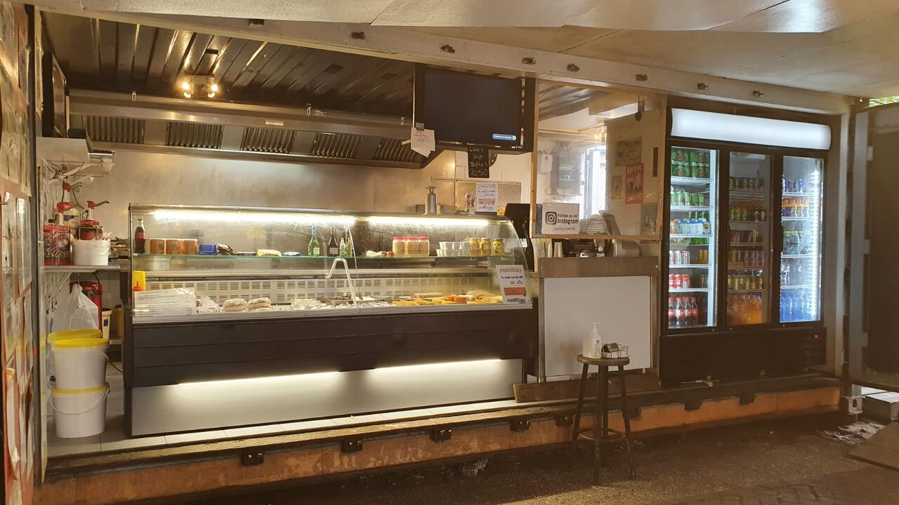

Hoe het begon
In 1997 besloot een werkloze jonge oudere, zonder guldens (die waren er toen nog), om te proberen een snackbar te beginnen bij het in aanbouw zijnde IJburg.
Na een hoop gedoe met de deelraad kon de huidige plek worden ingenomen. Om te kunnen starten werden er guldens geleend van de broer en een vriendelijke leverancier. Daarmee was op 1 april 1998 de opening van Eiburgh Snacks een feit. Nee, dit is geen grap. Het was echt op 1 april.
Met patat zijn we groot geworden. Onder de patateters zijn we inmiddels een begrip, en daar heeft Juul, de toenmalige aardappelschiller, met zijn markante verschijning flink aan bijgedragen.
U bent van harte welkom en geniet van onze verse patat en snacks, die we zelf het lekkerst vinden. Maar bedenk: smaken kunnen verschillen.
Frans, Tonny en Nickyhuidige vennoten van Eiburgh Snacks